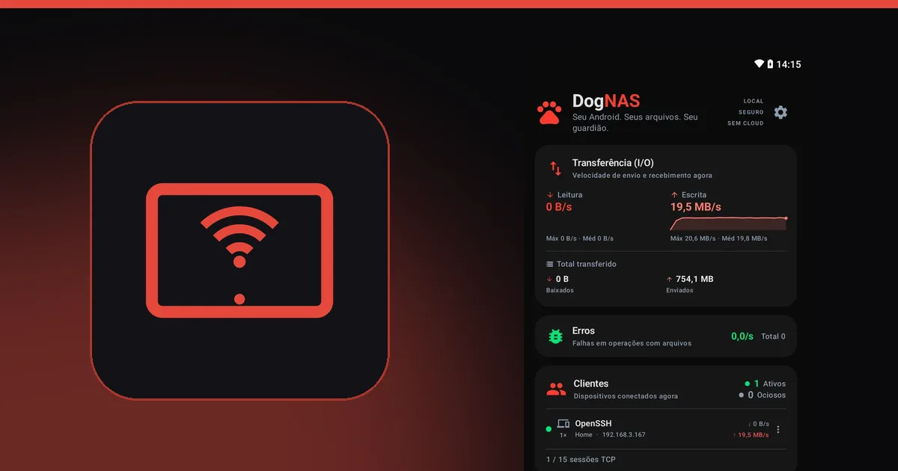

Tablet antigo parado? Transforme em armazenamento da casa

Todo mundo tem um tablet na gaveta: o das crianças, o que ficou lento, o que foi trocado por um modelo novo. Ele costuma ter mais armazenamento que um celular antigo, uma tela grande e uma bateria maior. Tudo isso o torna um bom candidato a servidor de arquivos da casa.
Por que um tablet funciona bem
- Tela grande. Deixado numa estante ou num suporte, ele mostra o painel do servidor (clientes conectados e velocidade das transferências) de relance.
- Bateria maior. A bateria própria ajuda em quedas curtas de energia, e um tablet parado na tomada fica no lugar sem ninguém mexer.
- Espaço. Muitos tablets têm cartão SD ou aceitam um disco USB, com USB OTG, para ampliar o espaço.
- Já está parado. Você dá uso a um aparelho que não tem outra função.
Como transformar o tablet em servidor
O DogNAS roda em celulares e tablets com Android 7.0 ou mais recente.
- Instale o DogNAS no tablet e escolha onde os arquivos ficam: memória, cartão SD ou disco USB.
- Toque em Iniciar.
- Crie um perfil para cada pessoa da casa, com PIN e pastas próprias.
- Nos celulares, abra o DogNAS Client Lite, aponte a câmera para o QR Code do perfil e digite o PIN. No computador, use FileZilla, WinSCP ou Cyberduck.


Cuidados com um tablet antigo
- Bateria. Se a bateria estiver inchada, o aparelho esquenta demais ou a tampa levanta, não o deixe ligado na tomada: pare de usá-lo e procure assistência. Segurança vem antes de reaproveitar.
- Deixe na tomada, em lugar ventilado. Servidores ficam ligados por muito tempo.
- Dependência do fabricante. Alguns fabricantes limitam apps em segundo plano para economizar bateria, então confira os requisitos e teste por alguns dias.
- Só na rede da casa. O acesso é pelo Wi-Fi local. Não é preciso abrir portas no roteador.
- Cópia independente. O DogNAS guarda os arquivos no armazenamento que você escolheu e não faz backup sozinho. Para o que é insubstituível, mantenha uma segunda cópia.
Quanto espaço
No plano Grátis, o DogNAS gerencia até 64 GB, com o perfil Casa e mais 2 perfis, e até 3 dispositivos pareados. O Pro é uma compra única, sem assinatura, e libera o armazenamento inteiro do aparelho.
Vale a pena
Para a maioria das casas, que só quer guardar fotos, vídeos e documentos, o tablet que já está parado resolve sem custo extra. Se precisar de mais, veja NAS tradicional ou servidor Android, e para o passo a passo, como transformar um Android antigo em servidor de arquivos.